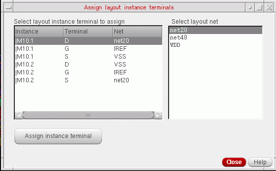

Assigning Layout Instance Terminals to Nets
When creating a one-to-one device correspondence between schematic and layout instances with matching masters, Define Device Correspondence is able to assign layout instance terminals to the correct nets automatically. However, in some cases, the command is unable to assign all the instance terminals automatically; for example,
- If the instance masters in a one-to-one correspondence do not match.
- If you are creating a one-to-many, many-to-one, or many-to-many device correspondence.
In these cases, the Assign layout instance terminals form is displayed. You can use this form to manually assign layout nets to the unbound instance terminals in the selected layout instances.
To assign layout instance terminals:
-
In the Assign layout instance terminals form, select a layout net from the list on the right and one or more instance terminals to which it is to be assigned from the list on the left.
 -
Click Assign instance terminal.
The instance terminals are assigned to the net and the updated assignment is instantly reflected in the Assign instance terminal form. -
Click Close to dismiss the form.
The device correspondence is updated and the connectivity you defined is propagated to the layout.
If you close the form without manually assigning all the terminals, the connections of the remaining terminals are not modified.
After you have assigned an instance terminal to a net, you can select the instance terminal again and assign it to a different net, if required. However, once assigned to a net, you cannot unassign the instance terminal and disconnect it.
Related Topics
Assign Layout Instance Terminals Form
Return to top